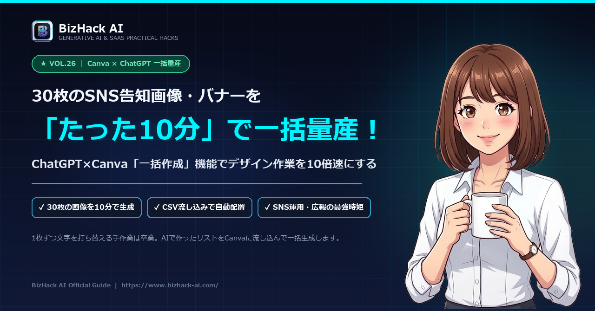

【Canva×ChatGPT一括生成】30枚のSNS告知バナーを10分で量産するテンプレ流し込み術

-
CSV形式テキスト一括出力プロンプト
見出し・サブコピー・番号・CTAを整理された表データで出力させる指示文。 -
Canva「一括作成（Bulk Create）」の連携手順
テンプレートのテキストボックスにCSVの各列を紐付けるマッピング設定。 -
文字あふれ・改行崩れを防ぐデザイン設計
30枚すべてが美しいレイアウトを維持するための枠サイズ・フォント設定の極意。
# 依頼内容 以下のテーマに基づき、SNS告知バナー用のテキスト（キャッチコピー、解説、アクション誘導）を【30パターン】作成してください。 Canvaの一括作成機能にそのままコピー＆ペーストできるよう、マークダウンの【表（テーブル）形式】で出力してください。 # テーマ 【テーマ・業界を記載：例「忙しいワーママ向けの時短料理テクニック」「事務職のためのPC時短術」】 # テーブルのカラム構成 1. No（01〜30） 2. Category（カテゴリ名：10文字以内） 3. CatchCopy（メインの惹きつけタイトル：20文字以内・改行なし） 4. SubText（具体的なノウハウ・解説：35文字以内・改行なし） 5. CTA（クリックを促す行動喚起：12文字以内・例「詳しく見る」「保存して実践」） # 制約事項 - キャッチコピーは感情を揺さぶる言葉（数字・問いかけ・共感）を入れてください。 - Canvaのテキスト枠から溢れないよう、文字数制限を厳格に守ってください。 - 出力は解説を一切挟まず、テーブルのみを出力してください。
💡 使い方：テーマを書き換えてChatGPTへ送信し、生成された表をCanvaの「一括作成」へペーストしてください。
1. バナーを「1枚ずつ手作り」する時代の終わり
Instagramのカルーセル投稿や、X（旧Twitter）のノウハウ図解、セール告知バナー。投稿頻度が成果を左右するSNS運用において、1枚の画像作成に30分もかけていては継続できません。
従来の手作業フロー（合計5時間〜）
コピーを考える ➡ Canvaで開く ➡ 文字を打ち直す ➡ 位置を調整する ➡ 30回繰り返す……。
AI×一括作成フロー（合計10分！）
ChatGPTで30件の文章を表形式で作成 ➡ Canvaにアップロード ➡ ワンクリックで30枚自動出力。
2. ChatGPTで30回分の投稿コピーをCSV出力するプロンプト
まずはChatGPTを使って、Canvaにそのまま読み込ませられる**「テーブル（CSV）形式」**でテキスト素材を一気に生成します。
# 依頼内容
以下のテーマに基づき、SNS告知バナー用のテキスト（キャッチコピー、解説、アクション誘導）を【30パターン】作成してください。
Canvaの一括作成機能にそのままコピー＆ペーストできるよう、マークダウンの【表（テーブル）形式】で出力してください。
# テーマ
【テーマ・業界を記載：例「忙しいワーママ向けの時短料理テクニック」「事務職のためのPC時短術」】
# テーブルのカラム構成
1. No（01〜30）
2. Category（カテゴリ名：10文字以内）
3. CatchCopy（メインの惹きつけタイトル：20文字以内・改行なし）
4. SubText（具体的なノウハウ・解説：35文字以内・改行なし）
5. CTA（読者に促す行動：例「保存して見返す」「詳細はプロフへ」）
# 作成ルール
- 読者のスクロールの手を止める具体的でインパクトのある表現を使う
- 各項目の文字数制限を厳格に守り、長さにばらつきが出ないようにする3. Canvaで「崩れない」マスターテンプレートを準備する
一括生成を成功させる最大のコツは、**「文字数が多くなっても崩れないテンプレート設計」**です。
- テキストボックスの横幅を固定する
テキストボックスを枠いっぱいに広げ、自動改行が想定通りにかかる幅をあらかじめ確保しておきます。 - フォントサイズをやや小さめに設定
最大の20文字・35文字が入っても枠からはみ出さないフォントサイズ（例：見出し32pt、本文20pt）を指定します。 - 文字揃えを「中央揃え」または「左揃え」に統一
デザインに応じて配置を揃え、行送りのスペースを調整します。
4. 【実践】一括作成機能で30枚を一瞬で書き出す全ステップ
テンプレートができたら、Canvaの一括作成機能（Bulk Create）を使います（※Canva Pro等の機能です）。
「アプリ」から「一括作成」を選択
Canva左側メニューの「アプリ」アイコンを検索し、「一括作成」をクリック。
「データを手動で入力」をクリック
表が表示されたら、ChatGPTが生成したテーブルをそのまま全選択して貼り付け（ペースト）。
テキスト要素とデータフィールドを接続
テンプレート上のテキストを右クリック ➡「データの接続」➡ 対応する列名（CatchCopy等）を選択。
「続行」➡「デザインを生成」をクリック
わずか数秒で、30ページ分の新しいデザインファイルが一瞬で自動生成されます！
5. クリック率（CTR）を最大化する微調整のチェックポイント
自動生成された30枚をそのまま書き出す前に、以下の2点だけサッと確認しましょう。
🔍 文字の改行位置
単語の途中で不自然な改行が入っていないか、30枚をパラパラとスクロールして確認（1分で終わります）。
🎨 背景色や写真のバリエーション
毎日同じ色だと飽きられるため、3色（青系、オレンジ系、緑系など）を順番に変えるとタイムラインで際立ちます。
6. まとめ＆実践ルーティン
「ChatGPTでコピー生成（3分）」＋「Canva一括作成（3分）」＋「目視チェック（4分）」。これだけで、これまで丸1日かかっていた1か月分のSNS画像作りが10分で完了します。
表形式でプロンプト出力
文字数制限を守らせてChatGPTからCSVデータを一括抽出。
崩れないテンプレ
幅を固定したマスターデザインを1枚だけ作っておく。
一括流し込み
データをマッピングして30枚のデザインを一瞬で完成。
浮いた時間をフォロワーとのコミュニケーションやコンテンツの企画に充てて、SNSの成果を一気に加速させましょう！